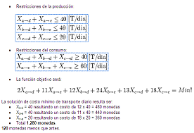

Algoritmos
Un algoritmo se puede definir como una secuencia de instrucciones que representan un modelo de solución para determinado tipo de problemas. O bien como un conjunto de instrucciones que realizadas en orden conducen a obtener la solución de un problema. ... Loa algoritmos son independientes de los lenguajes de programación.
Programación Estructurada

La programación estructurada es un paradigma de programación basado en utilizar funciones o subrutinas, y únicamente tres estructuras de control:
- secuencia: ejecución de una sentencia tras otra.
- selección o condicional: ejecución de una sentencia o conjunto de sentencias, según el valor de una variable booleana.
- iteración (ciclo o bucle): ejecución de una sentencia o conjunto de sentencias, mientras una variable booleana sea verdadera.
Programación Lineal
La programación lineal es el campo de la programación matemática dedicado a maximizar o minimizar una función lineal, denominada función objetivo, de tal forma que las variables de dicha función estén sujetas a una serie de restricciones expresadas mediante un sistema de ecuaciones o inecuaciones también lineales.